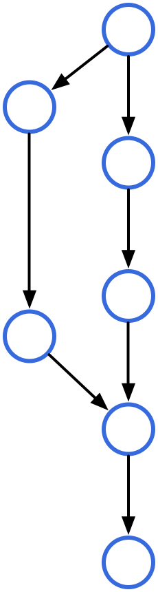
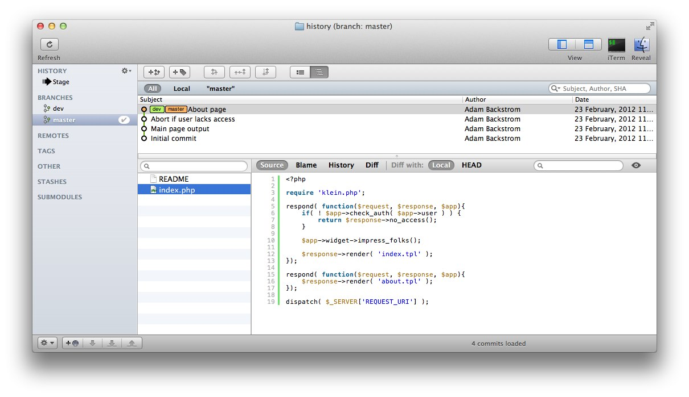
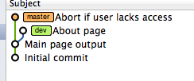
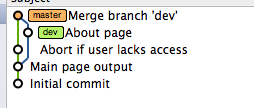
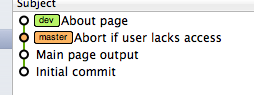
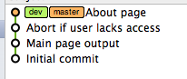
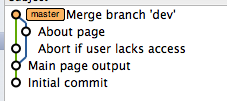

Version Control with Git
Adam Backstrom
ambackstrom@plymouth.edu
Adam Backstrom
ambackstrom@plymouth.edu
--- a/ext/standard/strnatcmp.c
+++ b/ext/standard/strnatcmp.c
@@ -105,7 +105,8
{
unsigned char ca, cb;
unsigned int ai, bi;
- int fractional, result, leading = true;
+ int fractional, result;
+ short leading = 1;
ai = bi = 0;
while (1) {
@@ -120,7 +121,7 @@
cb = b[++bi];
}
- leading = false;
+ leading = 0;
/* process run of digits */
adam@fsck:~$ patch -p1 < changes.diff
patching file ext/standard/strnatcmp.c
Hunk #4 succeeded at 56 (offset -2 lines).

I'm an egotistical bastard, and I name all my projects after myself. First Linux, now git.
git init | New repository | git clone | Clone existing repo | git add file | Add files to checkin | git commit | Commit added files | git show object | New repository | git status | Show modified files | git diff | Diff local changes |
git branch | List branches | git checkout name | Switch to branch | git merge name | Merge branch changes | git pull origin master | Fetch remote and merge | git push origin master | Push new local commits |

Two branches (master and dev) each with a unique commit.

(master)$ git merge dev

Merge made by recursive. index.php | 4 ++++ 1 files changed, 4 insertions(+), 0 deletions(-)
(dev)$ git rebase master

(master)$ git merge dev

Updating ff6103a..bee41c4 Fast-forward index.php | 4 ++++ 1 files changed, 4 insertions(+), 0 deletions(-)
(master)$ git merge --no-ff dev
(master)$ git branch -d dev
